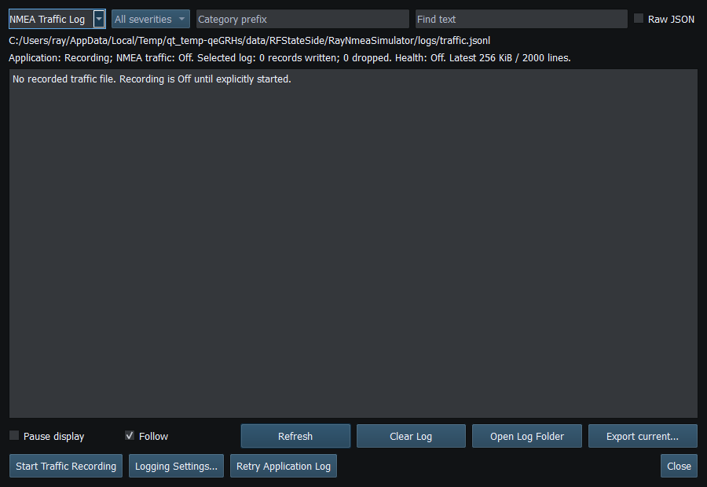

Use RayNmeaSimulator on trusted engineering systems and networks. Simulation traffic can resemble real vessel data. Keep explicit external authorization and review files/logs before sharing.
Provider keys, Signal K tokens and network bridge access keys use the operating system credential store. Check Save/status messages for storage errors. Keep credentials out of Layouts, screenshots, logs and shared files; do not use a masked field alone to confirm that a key was saved.
Signal K uses the configured endpoint; the default localhost avoids unsolicited remote publication and saved endpoints are preserved. Request Access, Test Connection and actual publishing are separate actions. Use trusted HTTPS where appropriate. RN2K bridge authentication does not encrypt traffic; use a trusted LAN or secured tunnel and a restrictive client allowlist. Do not expose a raw listener to the public Internet.
Inspect screenshots, logs, Layouts, routes and diagnostic exports for vessel NAME/MMSI, device serials, private endpoints, file paths and navigation information. Automatic redaction cannot recognize every secret a user types into an arbitrary name. Keep access keys and credential exports out of issues and public repositories.
Support links open the default browser only on explicit activation; contributions are voluntary and do not unlock features, support, warranties or services. Help's local images/content operate offline; explicit approved HTTPS links may leave the application. Refer to SECURITY.md for reporting policy and current boundaries.

Figure 106. Traffic Recording is Off by default and is independent of the on-screen NMEA viewer. Click to enlarge.
Engineering Units · NMEA PGNs and Sentences · Licensing and Credits · Using RayNmeaSimulator Safely · Connection Troubleshooting · Enable, Dispatch and Sending · Route Overview